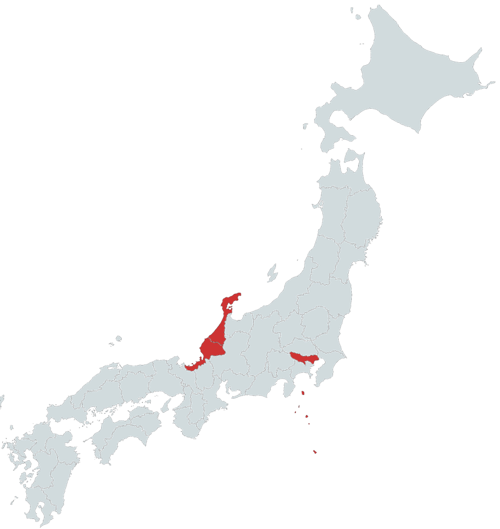
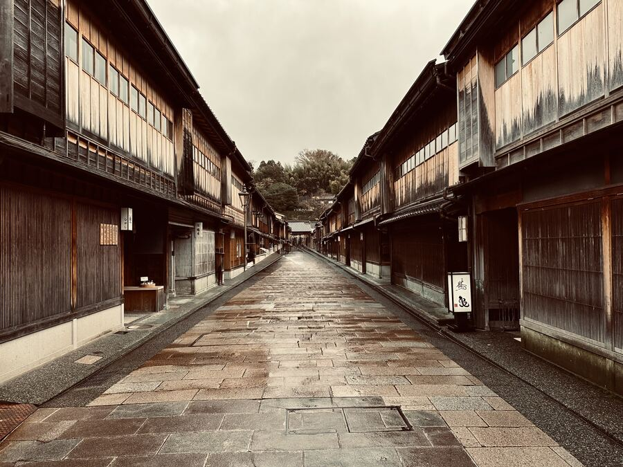
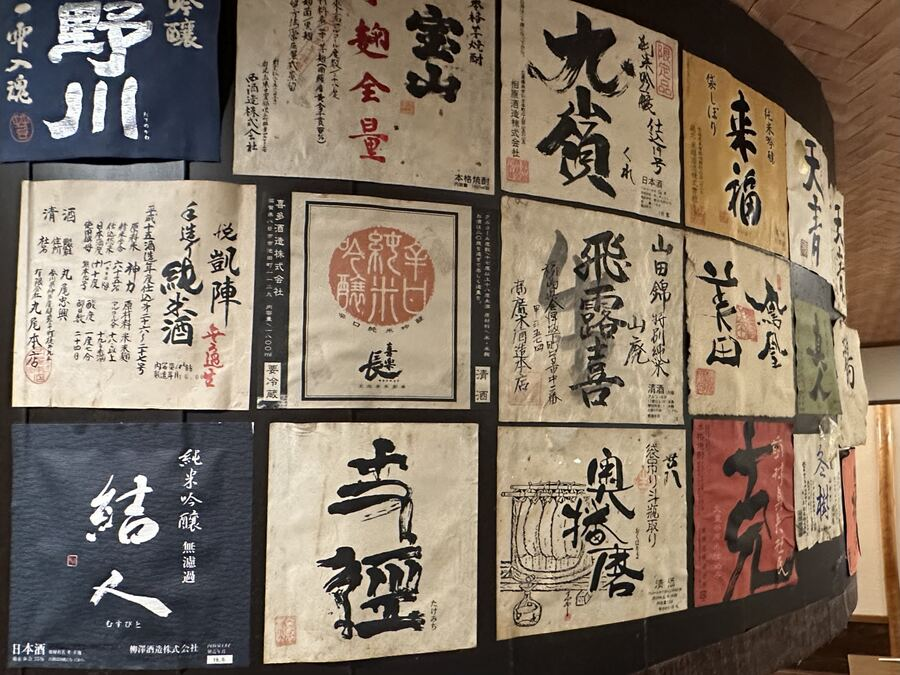
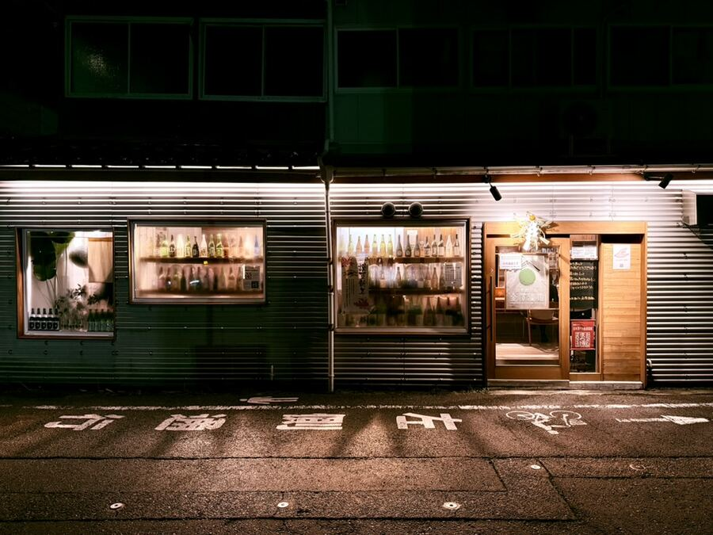

There's a sake bar in Kanazawa with no sign, eight seats, and a former brewer behind the counter who will ask you three questions and pour you something you've never heard of. A basement izakaya in Tokyo turned Michelin away so the regulars could get their seats back. In Fukui, a potter makes ceramics like he's pulling clay from the molten earth.
None of these are first page search results. All of them are the reason to go. We write about the places we'd send a friend to — experiences you can't find, only be shown by someone who knows.

Start with coffee at Sunny Bell. Walk through Ōmichō market before the crowds. Lunch at Shizenha Kagura, a Bib Gourmand ramen-ya that charcoal-grills the chashu and builds the broth from fifteen natural ingredients, no MSG. Afternoon tasting at the Noguchi Naohiko booth inside Kanazawa Station, then Higashi Chaya — "little Kyoto" — on foot. Sushi Kinari for dinner. End the night at Shu Shu, counter only, standing room by 10.

Okagesan is in a basement in Yotsuya, next to a whiskey-and-karaoke bar, sharing a bathroom. Twenty-four seats, one sitting, 6 to 10. The chef brings a chalkboard to your counter and walks you through what's seasonal. The water on your table — yawarimizu — is shipped from the brewery whose sake you're drinking that night, the same untreated spring water used in the mash. Several brewers make small batches for this room only. It had the star. It didn't give a shit. The regulars needed their seats back.

Silver paneling, two windows stacked with empty bottles, a door that blends in. Inside: one counter, no tables, three fridges, and Hiromoto Yamagami — who used to brew at Kikuhime before opening the place. Tell him what you like and he'll pour you three. The list is almost entirely Ishikawa and Toyama producers you can't get outside the region, including aged Kikuhime from his own brewing years and Noguchi Naohiko from the 92-year-old. Warm sake gets real attention here, which is rare.